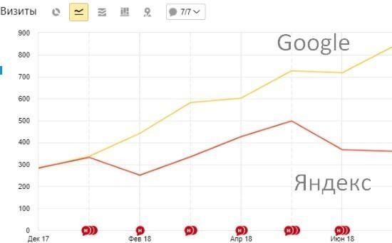

Продвижение интернет магазина окон
от агентства Digital Upgrade — Одесса
Интернет-магазин элитных окон
Стартовое состояние сайта: Больше 3 лет, отсутствие видимости и позиций (низкие показатели в Яндексе, отсутствие результатов в Google). 75% временных ссылок, которые были сняты при завершение работы. Множество дублей страниц. Задача – восстановить ссылочный профиль сайта, не допустить падения и выйти на динамику роста.
Задачи:
Рост органического трафика, Позиции в топ-10 Яндекс и Гугл по точному набору запросов, Организация и воссоздание потерянного ссылочного профиля, Устранение внутренних ошибок сайта.
Входные данные проекта:
Данные по ссылкам: в феврале-марте резкое проседание после снятие временных ссылок.Критическое техническое состояние сайта.
Ошибки, которые были на сайте:
- Дубли страниц категорий
- Дубли страниц товаров
- Некорректная карта .xml (страницы с http в карте, дубли в карте)
- Ошибочное применение шаблона для мета тегов – некорректные сниппеты
- Неверно настроен тег canonical
- Двойная кодировка (charset=windows-1251 и charset=utf-8 одновременно)
- Использование поддержки HTTP Strict Transport Security (HSTS)
- Сайт содержит некоторые элементы, которые не защищены с помощью HTTPS.
- При переводе сайта с HTTP на HTTPS не все ссылки были исправлены на безопасные с протоколом HTTPS.
- Очень низкая скорость загрузки сайта
- Отсутствие микроразметки
Стратегия продвижения:
- Сняли все потерянные ссылки через ahrefs, вебмастер, сформировали выгрузку.
- Проанализировали ссылки, которые остались, сформировали выгрузку
- Составили выборку прямых конкурентов в органике.
- Проанализировали ссылки конкурентов, сформировали выгрузку.
- Проанализировали полученные ссылки (траст, качество площадок, прочее)
- Разбили ссылки на 4 лагеря:
- качественные к восстановлению,
- некачественные, которые не восстанавливаем
- некачественные рабочие ссылки
- новые качественные к размещению
- Сформировали ссылочную стратегию и план размещения на 1-й квартал (покупка ссылок, крауд-ссылки, другие решения).
Заключение:
Порядка 60% потерянных ссылок были некачественными и не требовали восстановления. Порядка 20% оставшегося ссылочного профиля ссылки также были низкого качества (удалось удалить порядка 12% из 20%). В течение первых 3 месяцев была восстановленачасть ссылочного профиля.
Собрано СЯ. Разбито по страницам и группам.
- Собрали максимальное кол-во запросов по тематике
- Сгруппировали запросы по типу материалов, типу формы и комплектующих окон
- Сняли частоту запросов в месяц в точном соответствии
- Удалили нецелевые запросы
- Удалили запросы с 0 частотой в месяц
- Определили для каждой группы посадочную страницу по выдаче
- Провели позапросный анализ конкурентов из топ 5 выдачи по целевым запросам, отсеяли не целевые запросы.
Анализ выдачи в топ-10 и конкурентов
Подготовлен файл по конкурентам и анализ на положительную динамику запросов (исключены запросы с не релевантной выдачей)
- Собрали данные по мета-тегам и текстам конкурентов по СЯ
- Определили % сайтов производителей и порталов в топ-10
- Удалили инфо запросы
Подготовка контента
Подготовили план и ТЗ на контент-менеджера по наполнению сайта контентом, на базе анализа конкурентов. А также ряд ТЗ на дизайнера.
Как действовали:
- Составили перечень продвигаемых страниц, требующие аналитики
- Провели анализ контента страниц в топ-10
- Провели коммерческий анализ сайтов в топ-10
- Подготовили ТЗ на доработку сайта и наполнение сайта
По итогу у нас получилось больше 30 заданий постранично.
ТЗ включали в себя:
- ТЗ на создание дополнительных блоков
- Запрос дополнительной информации у клиента
- Данные стоимости и прайса
- Данные о технологии производства, преимуществах, прочему
Текстовая оптимизация
Провели постраничную подготовку текстовой оптимизации 25+ ключевых посадочных страниц сайта.
Техническое задание состояло из:
- ТЗ на оптимизацию title
- ТЗ на оптимизацию meta-описания
- ТЗ на оптимизацию заголовка h1
- ТЗ на оптимизацию текста страницы
- ТЗ на оптимизацию графических элементов страницы
- ТЗ на оптимизацию таблиц
- ТЗ по форматированию текста
Заключение:
В процессе подготовки были определены сложности и проблема канибализации ключевых слов. Составили перечень пересечений страниц и ключевых фраз – по итогу подготовили документ по текстовой деоптимизации ряда посадочных и не посадочных страниц.
Провели техническую оптимизацию
Проведены базовые работы по устранению ошибок и замечаний, которые были определены по итогам технического аудита:
- “чистка” кода страницы
- Дубли страниц категорий
- Дубли страниц товаров
- Некорректная карта .xml (страницы с http в карте, дубли в карте)
- Ошибочное применение шаблона для мета тегов – некорректные сниппеты
- Неверно настроен тег canonical
- Двойная кодировка (charset=windows-1251 и charset=utf-8 одновременно)
- Использование поддержки HTTP Strict Transport Security (HSTS)
- Сайт содержит некоторые элементы, которые не защищены с помощью HTTPS.
- При переводе сайта с HTTP на HTTPS не все ссылки были исправлены на безопасные с протоколом HTTPS.
- Очень низкая скорость загрузки сайта
- Отсутствие микроразметки
- Ошибки верстки
Также:
- Сформировали измененный файл robots.txt
- Заменили старую карту sitemap.xml созданную в ручную на автоматически сгенерированную.
- Устранили ошибки в хлебных крошках (были не рабочие хлебные или не корректные)
- Исправили битые ссылки на сайте
Провели юзабилити аудит
Проанализировали:
- Я.Метрику, аналитику – все пункты поочереди
- Вебвизор – просмотр посещений сайта и анализ “неудобств” пользования сайта
По итогу подготовили:
- ТЗ на боковое и верхнее меню
- ТЗ на редизайн Главной страницы
- ТЗ на редизайн блока преимуществ
- ТЗ на редизайн карточки товара
- ТЗ на функционал фильтра
- ТЗ на превью карточек товаров
- ТЗ на функционал фильтра и сортировки
Результаты работы
Увеличение количества ключевых фраз в органическом поиске Яндекс и Гугл
Заключение
рост составил 300%
Заключение
рост видимости составил 400%
Заключение:
количество ключевых фраз возросло на 80%.
Динамика позиций
Заключение:
позиции выросли с 12% до 32% по Яндексу, с 15% до 30% по Гугл.
Рост органического трафика

Качество трафика:
Снижение % отказов
Рост времени пребывания на сайте:
Заключение:
Рост трафика составил с 300 до 1200 переходов из органики в месяц (400%), увеличили качество трафика – снизили % отказов в 3 раза, увеличили время пребывания на сайте +65%.
Восстановление ссылочного профиля сайта
Качество ссылочной массы, ИКС:
Распределение запросов в Yandex
Распределение запросов в Google
Рекомендации
Арендованные ссылки:
1. Если у проекта арендованная ссылочная масса – у клиента должен быть доступ к этим ссылкам.
2. Частая ситуация: сайт продвигается достаточно давно и ссылки могли закупаться 3-4 года назад, после чего они просто продлеваются.
Как правило, от таких ссылок остается не более 20-25% живых доноров в лучшем случае. Старые ссылки нужно регулярно пересматривать.
3. Только качественные доноры и плавный переход на постоянные ссылки и альтернативы (крауд
и тд).
4. Нельзя размещать ссылки без аналитики и составленной ссылочной стратегии – вероятнее всего вы не получите ожидаемый результат, более того можно навредить проекту.
Cтратегия:
1. Исключение ненужных действий. Подготовка проекта – залог высокого результата. Корректное семантическое ядро, устранение всех технических ошибок, понимание выдачи и своих конкурентов = стратегии/набору корректных
действий для достижения результата в органическом поиске.
2. Без участия владельца бизнеса не будет результатов. Мы перебрали практически весь сайт, доработали контент, обработали более 70 крупных совместных задач (в рамках
каждой нам что-то было нужно от клиента). При подготовке стратегии нужно учитывать вовлеченность команды проекта в продвижение своего бизнеса.
3. Команда – программист, копирайтер, контент-менеджер. Специалисты, без которых
результата не достичь. На старте подготовки проекта и стратегии важно учитывать особенности/возможности CMS проекта. 40% проектов неуспешны по причине невозможности реализовать выведенные ТЗ по SEO и технической части.
SEO от агентства Digital Upgrade Одесса.
Контакты:
(093) 438-6770